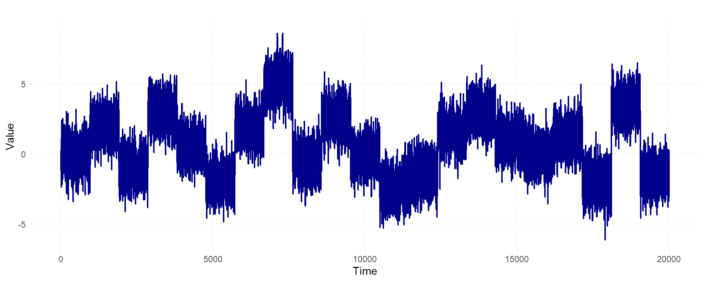
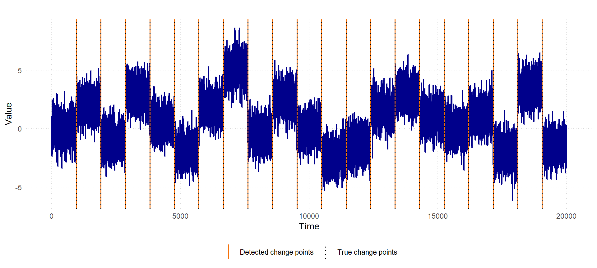
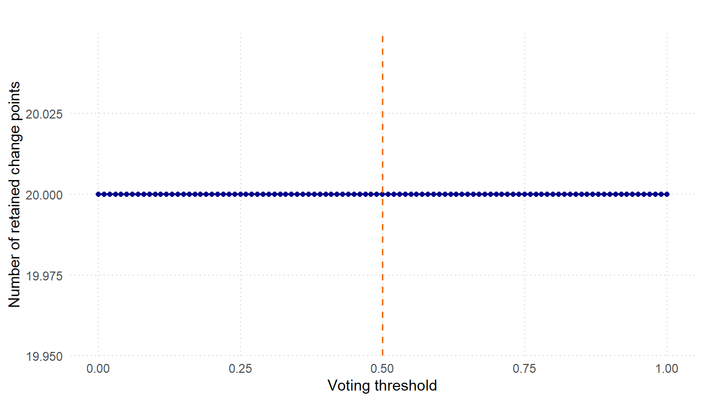
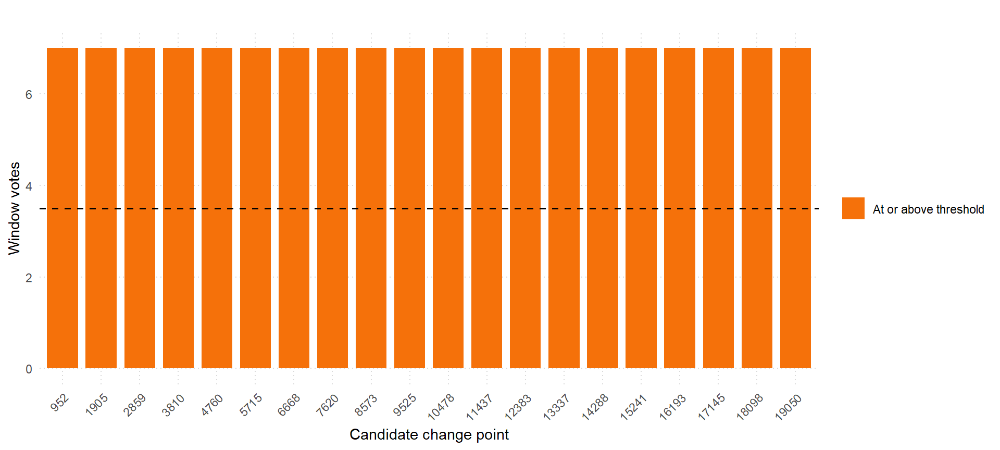
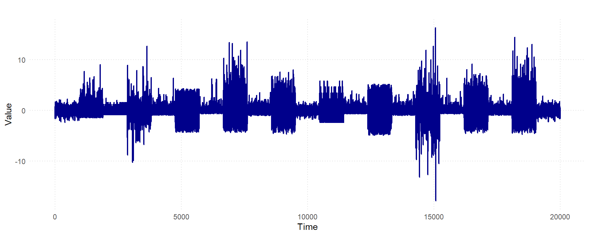
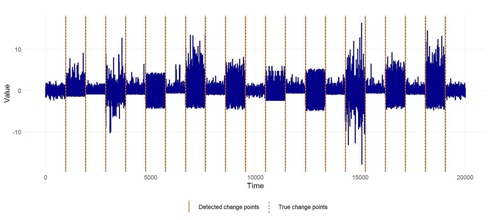
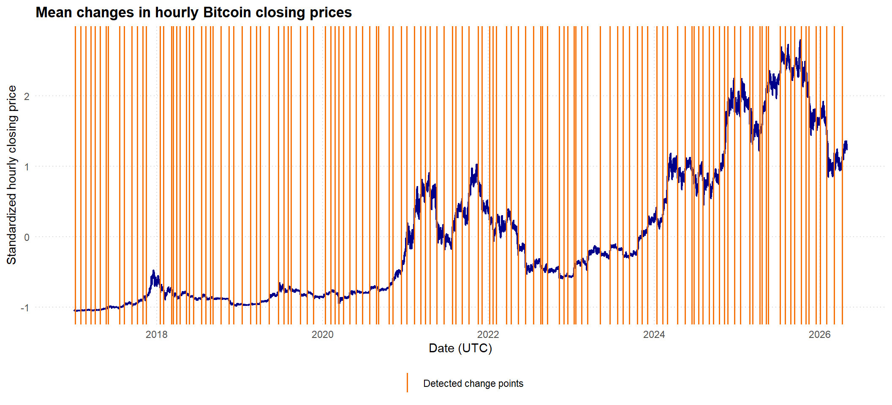
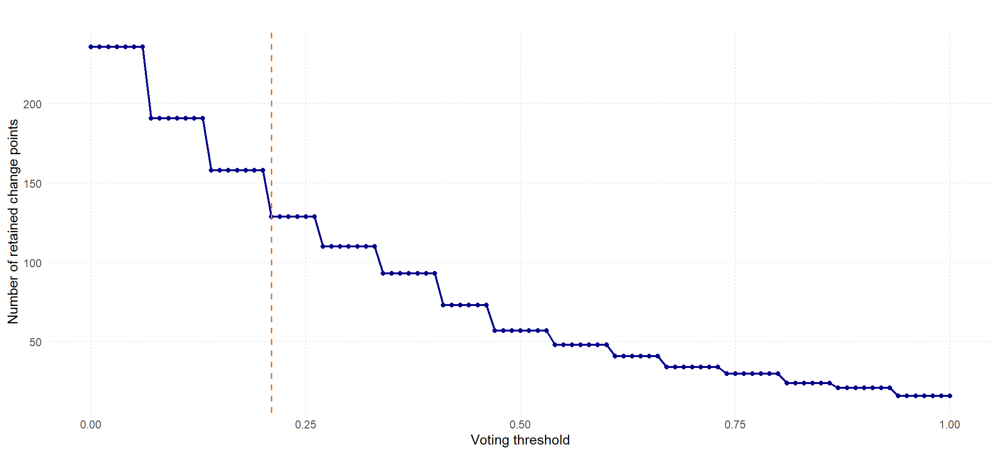
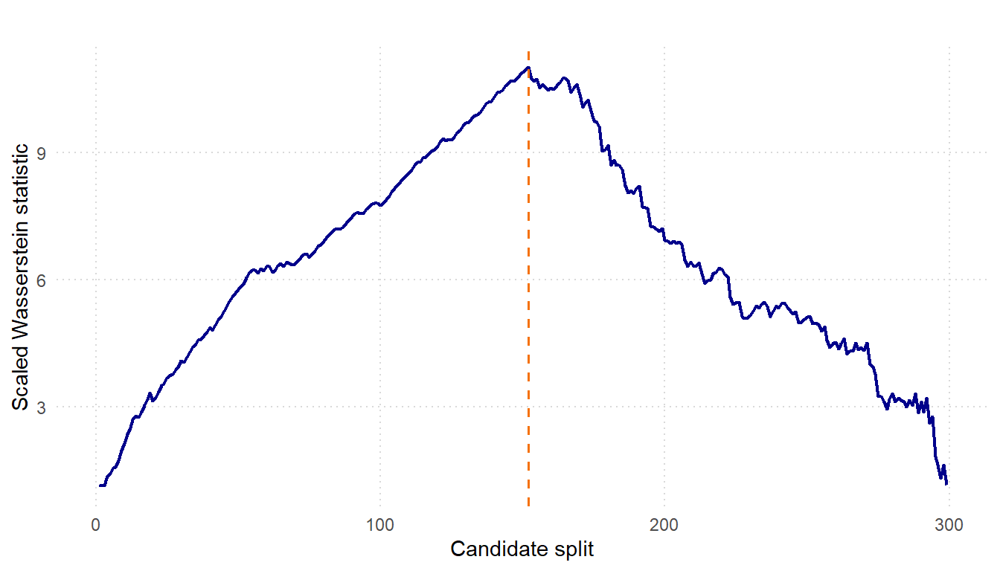

install.packages("scanr")Getting Started with scanr
1 Overview
The scanr package detects multiple change points in univariate time series using window-based SCAN statistics. The method compares local windows along a series, calibrates evidence for changes using resampling, and combines information across several window sizes.
This vignette demonstrates a typical workflow:
- simulate a univariate time series with known change points;
- run
scan_cpd()with multiple window sizes; - compare estimated change points with the known truth;
- inspect the result using diagnostic visualizations;
- repeat the workflow for distributional changes;
- apply the workflow to hourly Bitcoin closing prices;
- use the SWAL statistic for single change-point localization.
2 Load the Package
Users can install the package from CRAN and load it as follows:
library(scanr)Alternatively, the development version of scanr can be installed directly from GitHub:
if (!requireNamespace("devtools", quietly = TRUE)) {
install.packages("devtools")
}
devtools::install_github("Prabashoka/scanr")3 Example 1 - Changes in Mean
We first simulate a white-noise time series of length 20,000 with 20 change points and 21 piecewise-constant mean regimes. The noise variance is fixed, so this example focuses on changes in the mean.
set.seed(1234)
n <- 20000
change_points <- c(
952, 1905, 2858, 3810, 4763, 5715, 6668, 7620, 8573, 9525,
10478, 11430, 12383, 13335, 14288, 15240, 16193, 17145, 18098,
19050
)
means <- c(
0, 2, -1, 3, 0.5, -2, 2, 5, -0.5, 2.5, 0, -2.5, -1.5, 1.5,
3, 1, 0, 1.25, -2, 3.5, -1.5
)
segment_starts <- c(1L, change_points + 1L)
segment_ends <- c(change_points, n)
x_mean <- numeric(n)
for (j in seq_along(means)) {
segment_index <- segment_starts[j]:segment_ends[j]
x_mean[segment_index] <- rnorm(length(segment_index), mean = means[j], sd = 1)
}
change_points
#> [1] 952 1905 2858 3810 4763 5715 6668 7620 8573 9525 10478 11430
#> [13] 12383 13335 14288 15240 16193 17145 18098 19050The plot below shows the simulated series.

3.1 Run SCAN Change-Point Detection
The window_sizes argument controls the local scales used by the scan. The window sizes should be smaller than the spacing between nearby change points, while still being large enough to estimate the local distributions on each side of a candidate split. Smaller values improve localization and sensitivity to closely spaced changes, while larger values provide more stable local estimates.
default_window_sizes() randomly samples the requested number of distinct scales. By default, the largest is floor(n^(2 / 3)); it is always capped at floor(n / 2) so that both sides of a candidate split can contain a full window. Its optional seed argument makes the sampled grid reproducible without changing the caller’s random-number generator state. Supplying problem-informed bounds is useful when the approximate minimum segment length is known. Omitting window_sizes makes scan_cpd() use the same helper with its min_window, max_window, and n_windows arguments.
mean_window_sizes <- default_window_sizes(
n = length(x_mean),
min_window = 100,
max_window = floor(length(x_mean)^(2 / 3)),
n_windows = 7,
seed = 52
)
mean_window_sizes
#> [1] 154 181 232 241 278 438 478
fit_mean <- scan_cpd(
x_mean,
window_sizes = mean_window_sizes,
n_boot = 400,
random_state = 1234,
change_type = "mean",
n_jobs = -1
)
fit_mean
#> scanr change-point result
#> observations: 20000
#> change points: 952, 1905, 2859, 3810, 4760, 5715, 6668, 7620, 8573, 9525, 10478, 11437, 12383, 13337, 14288, 15241, 16193, 17145, 18098, 19050
NoteRemark on bootstrap calibration
The adaptive threshold for declaring a change point is derived through a tapered block bootstrap across the combined windows. Increasing the number of bootstrap samples (n_boot) produces a more accurate null distribution at the cost of longer computation time; a value of 400–1,000 is typically sufficient. The method supports parallel processing via Rust’s Rayon library for computational efficiency.
The estimated change points can be extracted directly from the fitted object.
fit_mean$change_points
#> [1] 952 1905 2859 3810 4760 5715 6668 7620 8573 9525 10478 11437
#> [13] 12383 13337 14288 15241 16193 17145 18098 190503.2 Evaluate Detection Accuracy
For simulated data, estimated change points can be compared with the known truth. The tolerance argument controls how close an estimated change point must be to a true change point to count as a match.
cpd_metrics(
true_cps = change_points,
estimated_cps = fit_mean$change_points,
n = length(x_mean),
tolerance = 20
)
#> $matches
#> true estimated distance
#> 1 952 952 0
#> 2 1905 1905 0
#> 3 3810 3810 0
#> 4 5715 5715 0
#> 5 6668 6668 0
#> 6 7620 7620 0
#> 7 8573 8573 0
#> 8 9525 9525 0
#> 9 10478 10478 0
#> 10 12383 12383 0
#> 11 14288 14288 0
#> 12 16193 16193 0
#> 13 17145 17145 0
#> 14 18098 18098 0
#> 15 19050 19050 0
#> 16 2858 2859 1
#> 17 15240 15241 1
#> 18 13335 13337 2
#> 19 4763 4760 3
#> 20 11430 11437 7
#>
#> $precision
#> [1] 1
#>
#> $recall
#> [1] 1
#>
#> $f1
#> [1] 1
#>
#> $covering
#> [1] 0.99860333.3 Visualize the Result
The package includes visual helpers for inspecting detected change points, window-level votes, and the overall vote scree.
vis_change_points(
x_mean,
fit_mean,
true_change_points = change_points,
x_label = "Time",
y_label = "Value"
)
3.4 Tune the Voting Threshold
The ensemble vote threshold, vote_threshold, controls how much agreement is required across window sizes before a candidate is retained. The default value is 0.5, meaning that a candidate must be supported by at least half of the available window-level votes.
vis_vote_scree(fit_mean)
vis_window_votes(fit_mean)
4 Example 2 - Changes in Distribution
The next example uses segments from different distribution families, including normal, exponential, Poisson, gamma, uniform, Student’s t, lognormal, beta, Weibull, and chi-square distributions. Each segment is standardized before being rescaled, so the signal is not only a simple shift in the mean. This creates a more challenging distributional change-point problem.
set.seed(1234)
n <- 20000
change_points <- c(952, 1905, 2858, 3810, 4763, 5715, 6668, 7620, 8573, 9525, 10478, 11430, 12383, 13335, 14288, 15240, 16193, 17145, 18098, 19050)
segment_starts <- c(1, change_points + 1)
segment_ends <- c(change_points, n)
families <- c("normal", "exponential", "poisson", "t", "gamma", "uniform", "lognormal", "weibull", "chisq", "beta", "normal", "poisson", "exponential", "uniform", "gamma", "t", "lognormal", "beta", "weibull", "chisq", "normal")
scale_factors <- c(0.7, 1.4, 0.6, 1.8, 0.75, 2.5, 0.65, 3.0, 0.7, 2.6, 0.6, 1.7, 0.65, 2.9, 0.7, 2.8, 0.6, 2.6, 0.65, 3.0, 0.7)
simulate_base <- function(m, family) {
z <- switch(family, normal = rnorm(m, mean = 0, sd = 1), exponential = rexp(m, rate = 1), poisson = rpois(m, lambda = 2), gamma = rgamma(m, shape = 2, rate = 1), uniform = runif(m, min = -sqrt(3), max = sqrt(3)), t = rt(m, df = 3), lognormal = rlnorm(m, meanlog = 0, sdlog = 0.7), beta = rbeta(m, shape1 = 2, shape2 = 5), weibull = rweibull(m, shape = 1.5, scale = 1), chisq = rchisq(m, df = 5))
as.numeric((z - mean(z)) / sd(z))
}
x_dist <- numeric(n)
for (j in seq_along(families)) {
segment_index <- segment_starts[j]:segment_ends[j]
x_dist[segment_index] <-scale_factors[j] * simulate_base(length(segment_index), families[j])
}
change_points
#> [1] 952 1905 2858 3810 4763 5715 6668 7620 8573 9525 10478 11430
#> [13] 12383 13335 14288 15240 16193 17145 18098 19050The simulated series contains changes in distributional shape and scale.

4.1 Run SCAN Change-Point Detection
For distributional changes, set change_type = "distribution". This uses the distribution-sensitive local statistic rather than a mean-only statistic.
distribution_window_sizes <- default_window_sizes(
n = length(x_dist),
min_window = 100,
max_window = floor(length(x_mean)^(2 / 3)),
n_windows = 15,
seed = 52
)
fit_dist <- scan_cpd(
x_dist,
window_sizes = distribution_window_sizes,
n_boot = 1000,
random_state = 1234,
change_type = "distribution",
vote_threshold = 0.5,
n_jobs = -1
)The set of estimated change points is:
fit_dist$change_points
#> [1] 954 1902 2860 3809 4764 5709 6669 7611 8573 9522 10478 11430
#> [13] 12383 13335 14289 15240 16195 17145 18100 190484.2 Evaluate Detection Accuracy
cpd_metrics(
true_cps = change_points,
estimated_cps = fit_dist$change_points,
n = length(x_dist),
tolerance = 20
)
#> $matches
#> true estimated distance
#> 1 8573 8573 0
#> 2 10478 10478 0
#> 3 11430 11430 0
#> 4 12383 12383 0
#> 5 13335 13335 0
#> 6 15240 15240 0
#> 7 17145 17145 0
#> 8 3810 3809 1
#> 9 4763 4764 1
#> 10 6668 6669 1
#> 11 14288 14289 1
#> 12 952 954 2
#> 13 2858 2860 2
#> 14 16193 16195 2
#> 15 18098 18100 2
#> 16 19050 19048 2
#> 17 1905 1902 3
#> 18 9525 9522 3
#> 19 5715 5709 6
#> 20 7620 7611 9
#>
#> $precision
#> [1] 1
#>
#> $recall
#> [1] 1
#>
#> $f1
#> [1] 1
#>
#> $covering
#> [1] 0.99650964.3 Visualize the Result
vis_change_points(
x_dist,
fit_dist,
true_change_points = change_points,
x_label = "Time",
y_label = "Value"
)
5 Bitcoin Dataset (BTC-USD closing prices)
This example applies change-point detection to hourly Bitcoin closing prices. The data are derived from the Bitcoin Historical Data dataset on Kaggle, which contains minute-level OHLC prices and trading volume.
5.1 Load the Bitcoin Data
btc_hourly <- read.csv(
"https://raw.githubusercontent.com/Prabashoka/scanr-vignette/refs/heads/main/Data/BTC-hourly-data-closing-price.csv"
)
btc_hourly$Datetime <- as.POSIXct(
btc_hourly$Datetime,
tz = "UTC"
)
head(btc_hourly)
#> Datetime Open High Low Close Volume
#> 1 2017-01-01 00:00:00 966.30 966.99 964.60 966.60 102.48481
#> 2 2017-01-01 01:00:00 966.60 966.60 962.54 963.87 149.02555
#> 3 2017-01-01 02:00:00 964.35 965.75 961.99 963.97 94.26740
#> 4 2017-01-01 03:00:00 963.97 964.71 960.53 962.83 77.61967
#> 5 2017-01-01 04:00:00 960.61 963.64 960.60 963.46 46.81022
#> 6 2017-01-01 05:00:00 963.46 964.00 962.80 964.00 53.526265.2 Choose Window Sizes
The largest candidate window is set to \(\lfloor n^{2/3}\rfloor\). A seed of 52 makes the random selection of 15 window sizes reproducible.
n_btc <- nrow(btc_hourly)
btc_window_sizes <- default_window_sizes(
n = n_btc,
min_window = 100,
max_window = floor(n_btc^(2 / 3)),
n_windows = 15,
seed = 52
)
btc_window_sizes
#> [1] 129 181 216 278 319 372 478 928 998 1178 1183 1256 1265 1436 1462The closing prices are standardized before detection. This changes their units but preserves the locations of mean shifts.
x_btc <- as.numeric(scale(btc_hourly$Close))5.3 Detect Changes in the Mean Bitcoin Price
The ensemble retains candidates whose normalized window vote is at least 0.21. Bootstrap calibration uses a separate seed through random_state.
fit_btc <- scan_cpd(
x_btc,
window_sizes = btc_window_sizes,
n_boot = 1000,
vote_threshold = 0.21,
random_state = 100,
change_type = "mean",
n_jobs = 1
)
fit_btc
#> scanr change-point result
#> observations: 81744
#> change points: 131, 731, 1234, 1802, 2211, 2774, 3387, 3625, 4811, 5311, 6114, 6718, 7285, 7644, 9127, 9469, 10336, 10497, 10852, 11215, 11873, 12183, 12617, 13505, 13934, 14421, 14711, 15553, 16386, 16888, 17752, 18671, 19296, 19708, 20644, 21619, 22186, 22625, 22936, 23922, 24666, 25311, 26593, 27131, 27614, 27994, 28486, 29148, 29846, 30504, 31275, 31980, 32195, 33300, 33711, 34615, 35188, 35988, 36673, 37160, 37635, 38377, 39114, 40009, 40353, 41054, 41749, 42729, 43156, 43939, 44301, 44659, 45747, 46222, 46961, 47734, 48581, 49350, 49527, 50080, 51306, 51816, 52216, 52865, 53060, 53683, 54302, 55633, 56682, 57482, 58077, 58739, 59594, 60072, 60669, 61630, 62256, 62743, 63835, 64602, 65319, 65543, 66050, 66501, 67166, 67598, 68241, 68786, 69147, 69833, 70477, 71446, 71746, 72537, 72768, 73191, 73429, 74683, 75211, 75787, 76188, 76916, 77387, 77729, 78467, 78928, 79575, 80383, 81214The detected positions can be mapped back to UTC timestamps and observed closing prices.
detected_btc_changes <- btc_hourly[
fit_btc$change_points,
c("Datetime", "Close"),
drop = FALSE
]
cat("Number of change points:", nrow(detected_btc_changes), "\n")
#> Number of change points: 129
detected_btc_changes
#> Datetime Close
#> 131 2017-01-06 10:00:00 925.00
#> 731 2017-01-31 10:00:00 934.37
#> 1234 2017-02-21 09:00:00 1093.57
#> 1802 2017-03-17 01:00:00 1162.22
#> 2211 2017-04-03 02:00:00 1114.07
#> 2774 2017-04-26 13:00:00 1289.06
#> 3387 2017-05-22 02:00:00 2030.00
#> 3625 2017-06-01 00:00:00 2312.37
#> 4811 2017-07-20 10:00:00 2340.98
#> 5311 2017-08-10 06:00:00 3360.59
#> 6114 2017-09-12 17:00:00 4187.00
#> 6718 2017-10-07 21:00:00 4335.78
#> 7285 2017-10-31 12:00:00 6200.00
#> 7644 2017-11-15 11:00:00 7108.00
#> 9127 2018-01-16 06:00:00 13157.89
#> 9469 2018-01-30 12:00:00 10895.99
#> 10336 2018-03-07 15:00:00 10655.00
#> 10497 2018-03-14 08:00:00 9130.00
#> 10852 2018-03-29 03:00:00 7866.63
#> 11215 2018-04-13 06:00:00 7824.00
#> 11873 2018-05-10 16:00:00 9348.31
#> 12183 2018-05-23 14:00:00 7887.00
#> 12617 2018-06-10 16:00:00 7211.45
#> 13505 2018-07-17 16:00:00 6751.72
#> 13934 2018-08-04 13:00:00 7257.33
#> 14421 2018-08-24 20:00:00 6610.01
#> 14711 2018-09-05 22:00:00 6900.05
#> 15553 2018-10-11 00:00:00 6458.33
#> 16386 2018-11-14 17:00:00 5679.41
#> 16888 2018-12-05 15:00:00 3829.08
#> 17752 2019-01-10 15:00:00 3782.40
#> 18671 2019-02-17 22:00:00 3601.00
#> 19296 2019-03-15 23:00:00 3901.21
#> 19708 2019-04-02 03:00:00 4176.93
#> 20644 2019-05-11 03:00:00 6549.70
#> 21619 2019-06-20 18:00:00 9428.82
#> 22186 2019-07-14 09:00:00 10834.35
#> 22625 2019-08-01 16:00:00 10072.68
#> 22936 2019-08-14 15:00:00 10471.69
#> 23922 2019-09-24 17:00:00 9458.29
#> 24666 2019-10-25 17:00:00 8500.17
#> 25311 2019-11-21 14:00:00 7777.00
#> 26593 2020-01-14 00:00:00 8273.16
#> 27131 2020-02-05 10:00:00 9371.06
#> 27614 2020-02-25 13:00:00 9568.73
#> 27994 2020-03-12 09:00:00 7342.49
#> 28486 2020-04-01 21:00:00 6365.70
#> 29148 2020-04-29 11:00:00 8147.58
#> 29846 2020-05-28 13:00:00 9412.04
#> 30504 2020-06-24 23:00:00 9286.06
#> 31275 2020-07-27 02:00:00 10064.65
#> 31980 2020-08-25 11:00:00 11617.29
#> 32195 2020-09-03 10:00:00 11266.67
#> 33300 2020-10-19 11:00:00 11480.76
#> 33711 2020-11-05 14:00:00 14912.70
#> 34615 2020-12-13 06:00:00 18988.37
#> 35188 2021-01-06 03:00:00 34222.39
#> 35988 2021-02-08 11:00:00 39473.03
#> 36673 2021-03-09 00:00:00 52027.83
#> 37160 2021-03-29 07:00:00 55911.13
#> 37635 2021-04-18 02:00:00 58866.98
#> 38377 2021-05-19 00:00:00 42634.99
#> 39114 2021-06-18 17:00:00 36243.31
#> 40009 2021-07-26 00:00:00 36755.42
#> 40353 2021-08-09 08:00:00 43772.38
#> 41054 2021-09-07 13:00:00 50622.05
#> 41749 2021-10-06 12:00:00 52776.61
#> 42729 2021-11-16 08:00:00 61032.99
#> 43156 2021-12-04 03:00:00 52044.67
#> 43939 2022-01-05 18:00:00 45927.26
#> 44301 2022-01-20 20:00:00 42737.70
#> 44659 2022-02-04 18:00:00 40496.05
#> 45747 2022-03-22 02:00:00 41856.59
#> 46222 2022-04-10 21:00:00 42716.63
#> 46961 2022-05-11 16:00:00 30294.86
#> 47734 2022-06-12 21:00:00 27361.99
#> 48581 2022-07-18 04:00:00 21281.97
#> 49350 2022-08-19 05:00:00 22820.00
#> 49527 2022-08-26 14:00:00 21161.00
#> 50080 2022-09-18 15:00:00 19806.00
#> 51306 2022-11-08 17:00:00 19340.00
#> 51816 2022-11-29 23:00:00 16434.00
#> 52216 2022-12-16 15:00:00 16974.00
#> 52865 2023-01-12 16:00:00 18135.00
#> 53060 2023-01-20 19:00:00 21505.00
#> 53683 2023-02-15 18:00:00 22978.00
#> 54302 2023-03-13 13:00:00 22552.00
#> 55633 2023-05-08 00:00:00 28608.00
#> 56682 2023-06-20 17:00:00 27777.00
#> 57482 2023-07-24 01:00:00 29914.00
#> 58077 2023-08-17 20:00:00 27644.00
#> 58739 2023-09-14 10:00:00 26332.00
#> 59594 2023-10-20 01:00:00 28675.00
#> 60072 2023-11-08 23:00:00 35640.00
#> 60669 2023-12-03 20:00:00 39581.00
#> 61630 2024-01-12 21:00:00 43433.00
#> 62256 2024-02-07 23:00:00 44346.00
#> 62743 2024-02-28 06:00:00 57202.00
#> 63835 2024-04-13 18:00:00 67192.00
#> 64602 2024-05-15 17:00:00 65125.00
#> 65319 2024-06-14 14:00:00 66952.00
#> 65543 2024-06-23 22:00:00 63605.00
#> 66050 2024-07-15 01:00:00 61392.00
#> 66501 2024-08-02 20:00:00 62534.00
#> 67166 2024-08-30 13:00:00 59636.00
#> 67598 2024-09-17 13:00:00 58984.00
#> 68241 2024-10-14 08:00:00 64386.00
#> 68786 2024-11-06 01:00:00 71148.00
#> 69147 2024-11-21 02:00:00 94502.00
#> 69833 2024-12-19 16:00:00 100663.00
#> 70477 2025-01-15 12:00:00 96887.00
#> 71446 2025-02-24 21:00:00 93953.00
#> 71746 2025-03-09 09:00:00 85507.00
#> 72537 2025-04-11 08:00:00 81583.00
#> 72768 2025-04-20 23:00:00 85198.00
#> 73191 2025-05-08 14:00:00 99419.00
#> 73429 2025-05-18 12:00:00 103977.00
#> 74683 2025-07-09 18:00:00 109554.00
#> 75211 2025-07-31 18:00:00 117641.00
#> 75787 2025-08-24 18:00:00 114591.00
#> 76188 2025-09-10 11:00:00 112289.00
#> 76916 2025-10-10 19:00:00 116684.00
#> 77387 2025-10-30 10:00:00 110116.00
#> 77729 2025-11-13 16:00:00 100586.00
#> 78467 2025-12-14 10:00:00 89858.00
#> 78928 2026-01-02 15:00:00 89340.00
#> 79575 2026-01-29 14:00:00 86866.00
#> 80383 2026-03-04 06:00:00 68503.00
#> 81214 2026-04-07 21:00:00 69916.005.4 Visualize the Bitcoin Results
vis_change_points(
x_btc,
fit_btc,
index = btc_hourly$Datetime,
x_label = "Date (UTC)",
y_label = "Standardized hourly closing price",
title = "Mean changes in hourly Bitcoin closing prices"
)
#> Warning in scale_x_datetime(): A <numeric> value was passed to a Datetime scale.
#> ℹ The value was converted to a <POSIXct> object.
The vote scree shows how the number of retained candidates changes with the vote threshold. The selected threshold is marked at 0.21.
vis_vote_scree(fit_btc)
Caution
Bitcoin prices are strongly trending and serially dependent. Detected changes identify shifts in the mean price level; they should not be interpreted as causal market events.
6 SWAL Statistic for Single Change-Point Detection
The SCAN procedure above combines local evidence across many windows. The package also exposes lower-level localization tools for a single region that is believed to contain one change point.
For a mean change, the mean version of the SWAL statistic aligns with the CUSUM localizer. Both methods search for the split that best separates the left and right sides of the local region.
set.seed(1234)
true_single_cp <- 150
mean_region <- c(
rnorm(true_single_cp, mean = 0, sd = 1),
rnorm(true_single_cp, mean = 2, sd = 1)
)
c(
truth = true_single_cp,
cusum = ts_cusum(mean_region),
swal_distribution = swal_statistic(mean_region, change_type = "distribution")
)
#> truth cusum swal_distribution
#> 150 150 150The distributional version is more general. It can localize changes where the mean is approximately unchanged but other aspects of the distribution, such as variance, change sharply. In the example below, both segments have mean zero, but the second segment has a much larger standard deviation.
set.seed(1234)
var_region <- c(
rnorm(true_single_cp, mean = 0, sd = 0.5),
rnorm(true_single_cp, mean = 0, sd = 2)
)
c(
truth = true_single_cp,
cusum = ts_cusum(var_region),
swal_distribution = swal_statistic(var_region, change_type = "distribution")
)
#> truth cusum swal_distribution
#> 150 164 152The ts_wasserstein() function returns both the estimated split and the full sequence of split statistics. The plotting helper vis_swal_curve() displays that localization curve, making it easier to inspect where the statistic is maximized.
vis_swal_curve(
var_region,
start = 1,
end = length(var_region),
x_label = "Candidate split",
y_label = "Scaled Wasserstein statistic",
title = ""
)
7 Session Information
Recording session information helps make the vignette reproducible across R versions and operating systems.
sessionInfo()
#> R version 4.6.1 (2026-06-24 ucrt)
#> Platform: x86_64-w64-mingw32/x64
#> Running under: Windows 10 x64 (build 19045)
#>
#> Matrix products: default
#> LAPACK version 3.12.1
#>
#> locale:
#> [1] LC_COLLATE=English_Australia.utf8 LC_CTYPE=English_Australia.utf8
#> [3] LC_MONETARY=English_Australia.utf8 LC_NUMERIC=C
#> [5] LC_TIME=English_Australia.utf8
#>
#> time zone: Australia/Sydney
#> tzcode source: internal
#>
#> attached base packages:
#> [1] stats graphics grDevices utils datasets methods base
#>
#> other attached packages:
#> [1] scanr_0.1.0
#>
#> loaded via a namespace (and not attached):
#> [1] vctrs_0.7.3 cli_3.6.6 knitr_1.51 rlang_1.2.0
#> [5] xfun_0.59 otel_0.2.0 generics_0.1.4 S7_0.2.2
#> [9] jsonlite_2.0.0 labeling_0.4.3 glue_1.8.1 htmltools_0.5.9
#> [13] scales_1.4.0 rmarkdown_2.31 grid_4.6.1 tibble_3.3.1
#> [17] evaluate_1.0.5 fastmap_1.2.0 yaml_2.3.12 lifecycle_1.0.5
#> [21] compiler_4.6.1 dplyr_1.2.1 RColorBrewer_1.1-3 pkgconfig_2.0.3
#> [25] htmlwidgets_1.6.4 farver_2.1.2 digest_0.6.39 R6_2.6.1
#> [29] tidyselect_1.2.1 parallel_4.6.1 pillar_1.11.1 magrittr_2.0.5
#> [33] withr_3.0.3 tools_4.6.1 gtable_0.3.6 ggplot2_4.0.3